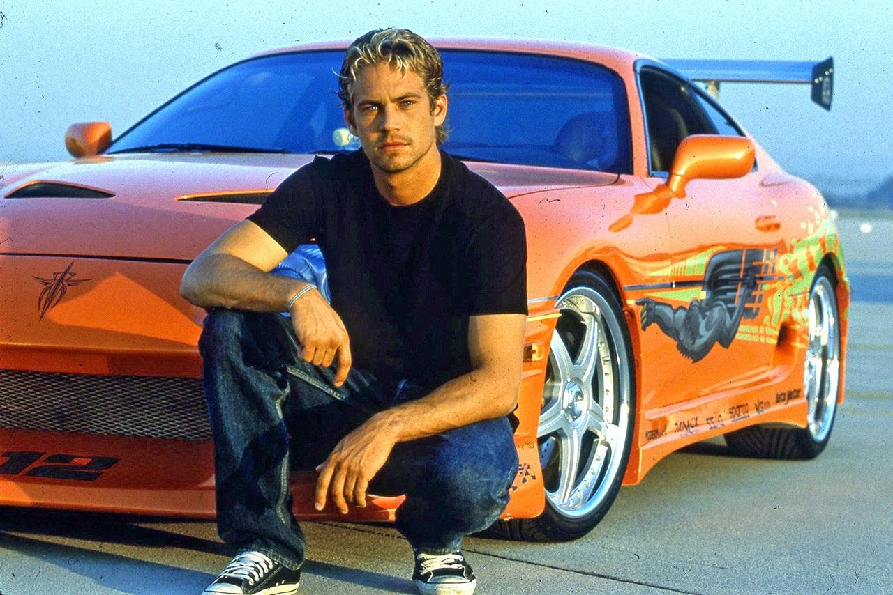
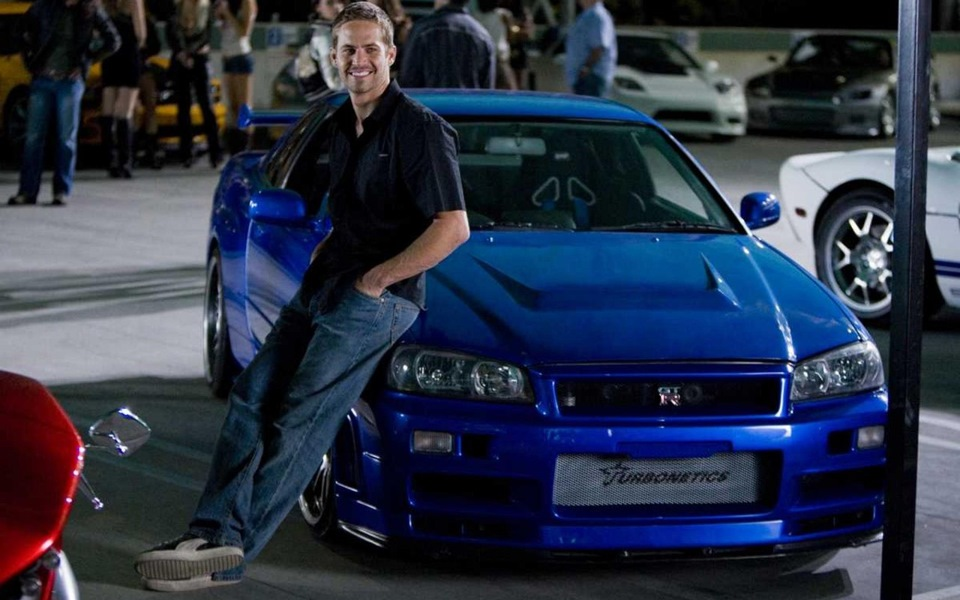
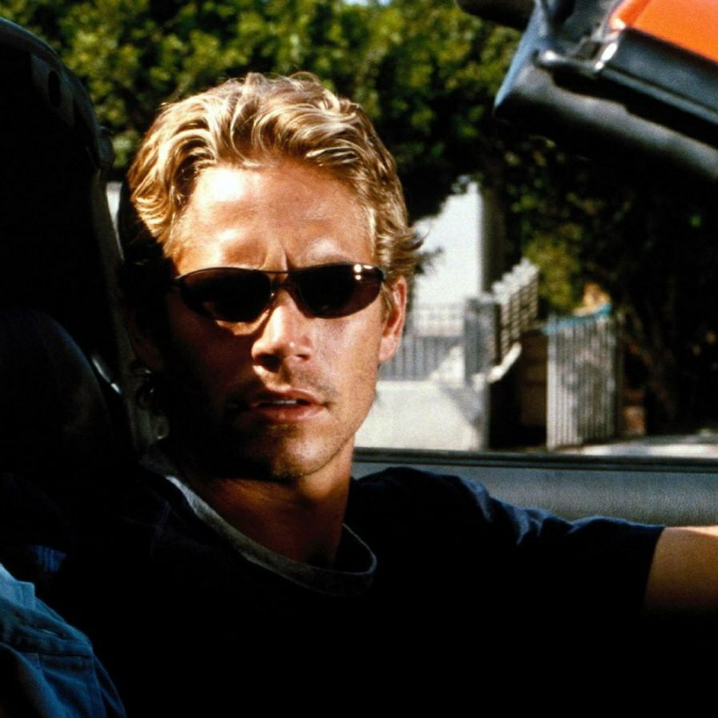
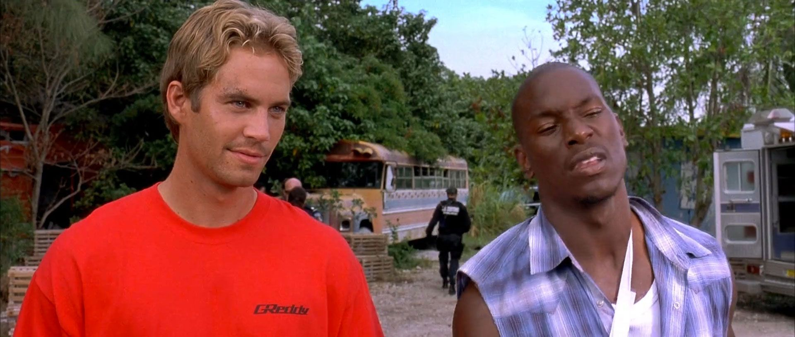
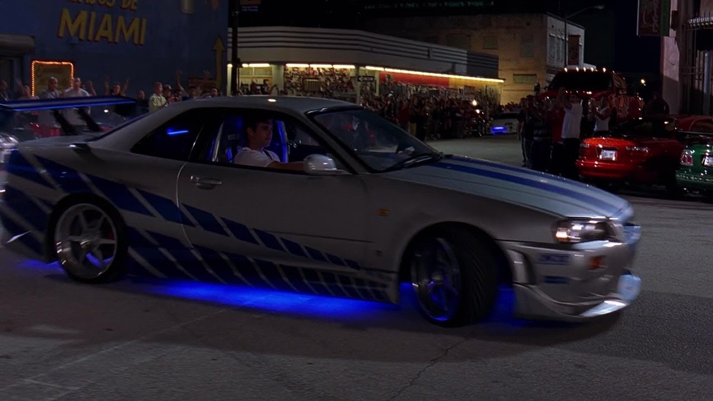

Биография
Брайан О’Конор работал под прикрытием в департаменте полиции Лос-Анджелеса, который поручил ему задачу раскрыть дело о серии угонов полуприцепов грузовиков. Работая над этим делом, Брайан внедряется в банду Доминика Торетто, считая, что он знает об этих угонах или, возможно, даже причастен к ним. Он влюбляется в сестру Дома, Мию Торетто, поэтому долго не решается признавать виновность банды. Но все факты против этого. В итоге оказывается, что Дом, действительно, угонял грузовики. Во время последнего налёта банда прогорела: водители грузовиков были готовы к налёту. Брайан и Миа спешат их спасти. В конце Брайан отпускает Доминика, отдав ему ключи от своей машины.Во второй части Брайана вербует таможенная служба Майами, чтобы раскрыть дело Картера Вероны. Брайан соглашается на работу при условии, что с ним будет рулить его старый друг, Роман Пирс. Не сразу, но Роман соглашается на работу. Внедрившись к Картеру на службу, Брайан и Роман рискуют быть убитыми после завершения задания. Но им удаётся избежать смерти и посадить преступника за решётку.Новое приключение ждёт Брайана в четвертой части. Работая федералом, он расследует дело Артуро Браги. К его поискам подключается и Доминик, но совсем с другой целью — отомстить за свою возлюбленную Летти. В этой же части Брайан снова встречается с Мией. Во время поисков и Брайну, и Торетто удаётся внедриться на работу к Браге. После выполнения работы всех гонщиков готовятся убить, но Брайану с Домом удаётся бежать. В конце фильма они захватывают Артуро и скрыться от преследователей. Доминика же, несмотря на его заслуги, приговаривают к 25 годам заключения в тюрьме строгого режима Ломпак. Чтобы спасти его, Брайан снова плюёт на закон: вместе с Мией и друзьями Дома они подрезают автобус, на котором перевозили заключённых.В пятой части фильма Брайан и Миа скрываются от властей в Бразилии, где их встречает старый друг Винс. Он подбрасывает им работёнку: угнать тачки из поезда. К делу подключается и Доминик. Оказывается, что одна из машин принадлежит местному авторитету Рейсу, который бросает все силы на поимку угонщиков. В машине был спрятан чип, на котором есть информация о точках Рейса. Пользуясь этой информацией, Брайан и Дом собирают команду, чтобы ограбить его. Несмотря на преследование со стороны Рейса и специального агента Хоббса, им удаётся провернуть это дело. В конце Брайан получает десять миллионов долларов как трофей и начинает новую жизнь вместе с Мией.Агент Люк Хоббс отыскивает на Канарах отошедшего от дел Доминика Торетто и просит его помощи — им предстоит остановить команду профессиональных гонщиков-преступников, работающих в Лондоне под лидерством Оуэна Шоу, в прошлом — офицера военного спецназа. Доминик соглашается только потому, что с ними работает Летти Ортис, его бывшая девушка, якобы погибшая несколько лет назад. Он сразу же разыскивает Брайана, и тот, несмотря на семью (у них с Мией рождается сын Джек в начале фильма), едет с ним. Собрав команду, в которую вошли все основные герои предыдущего фильма и помощница Люка — Райли Хикс, герои пытаются поймать Шоу в первый раз, но безуспешно; попытка выяснить его местонахождение с помощью техника Фируца тоже проваливается — его убивают, однако становится ясно, что Шоу работает с сидящим в тюрьме Артуро Брагой.
Фотоальбом
    Контакты
Телефон: +79025628034
Адрес: Лос-Анджелес
artm.viktorov.79@mail.ru - пишите письма